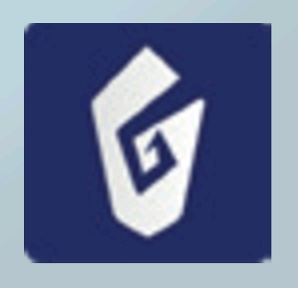
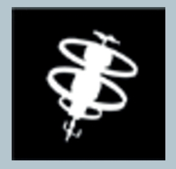
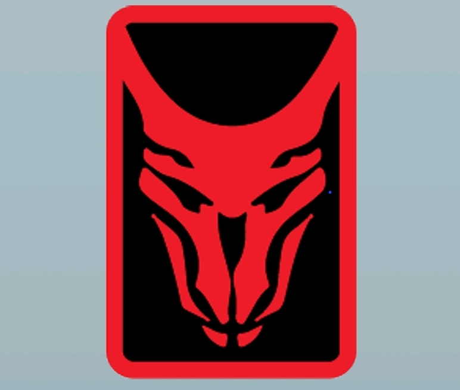
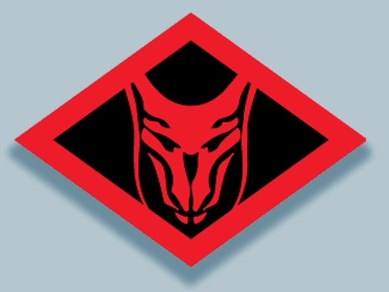

Characters
Astrochimp
- 3 🌟 if Astrochimp 🌍
- +2 🌟 if in Possession of a

- +2 🌟 if in Possession of 
- +2 🌟 if in Possession of a 🔫
Tunnel Rat
May Step through VentsLoyal
To Influence return all cubes on this card and place at least 1 more cube than was previously hereCounselor
- 2 🌟 if the Counselor 🌍
- 4 🌟 if the 🌍
- 2 🌟 if you have more than any other player at 
- 1 point if you have the least Cubes in Betrayal Box at
Officer
If not Blackout, may Step (or if Down, be Dragged) through Locks, which are then removedWormtongue
As an Action, move a cube on a Colocated Human’s card to BetrayalCyborg
- 1 for each Character with Officer that is down at
- 2 🌟 if no 🚹 PCs Escape
- 2 🌟 if no ☣️ 🌍
- 2 🌟 if  was released
Uncanny
It takes two Activation discs for this Character to become ExhaustedFugitive
No actions taken with or against this Character will make a player SuspectDaredevil
- 3 🌟 if Daredevil 🌍
- +2 🌟 if you are the only 🚹 that 🌍
- +2 🌟 if you Possess or are ☣️
- 1 point if was released
Pride
Daredevil cannot be RobbedAdrenaline
Daredevil is not Downed by Hazards, Step or Airlock into Section with Hazard is always freeEngineer
- 3 🌟 if detonates On Board before
- 3 🌟 if no ☣️ Characters Escape
- 2 🌟 if does not Escape
- 1 point if Innocent, but may win even if Guilty
Officer
If not Blackout, may Step (or if Down, be Dragged) through Locks, which are then removedJury Rig
As an action, Repair a Colocated Damaged Section or Down RobotExile
- 2 🌟 if Exile 🌍
- +2 🌟 for each Possessed of Escaped Characters
- +3 🌟 if Exile has and 📡 does not
Fast Talk
Cannot be Attacked by Humans with Bludgeon in Lit SectionsHacker
May perform a Free Console Action instead of a Free Pick Up or Drop. If Jammers are OFF may perform Console Actions in any sectionMedical
- 2 🌟 if no Down 🚹s on Board at
- 1 point for each star reached on the tracker on the Character Card. Move tracker one slot for every:
- 🚹 Revival performed by Medical
- Cube moved to Betrayal upon Medical's Reveal
Emergency Response
As an Action, may Revive a Human. Step or Airlock into Sections with Down Human is always FreeHelpful
No player may have more than one influence cube on this CharacterSecurity
- 1 point per Down Fugitive, Monster, or non-innocent Player Characters on Board at
- 1 point per Down 🚹 with Bludgeon or 🔫 on Board at
- 1 point if does not Escape
- 1 point if does not Escape
- +1 point if both and do not Escape
Peacekeeper
May only attack Fugitives, Monsters, or non-innocent PCs. May not SabotageArmored
Cannot be Attacked or Robbed by BludgeonStation Chief
- 1 point for every other 🚹 that 🌍
- +1 point per NPC with the Officer ability that 🌍
- 2 🌟 if Station Chief On Board and Live at
Officer
If not Blackout, may Step (or if Down, be Dragged) through Locks, which are then removedPride
Cannot be RobbedStowaway
- 2 🌟 if 📡 ends with 
- 2 🌟 if 📡 ends with
- 2 🌟 if Stowaway 🌍
- +3 🌟 if Escape with and no other Character does
Tunnel Rat
May Step through VentsHacker
May perform a Free Console Action instead of a Free Pick Up or Drop. If Jammers are OFF may perform Console Actions in any Section.Stranger
- 1 point if your Secret Identity is not revealed until
- 1 point if Possess
- 2 🌟 if you score Bonus Points
- 2 🌟 if Live and Colocated with a Bonus Character of yours at
Uncanny
It takes two Activation discs for this Character to become ExhaustedTroubleshooter
- 2 🌟 if is not Armed at
- 2 🌟 if was never released
- 2 🌟 if no Sections are Damaged at
- 1 point for each Live 🤖 at